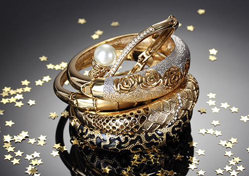

Золото — материал практически вечный. Тем не менее, даже золотым ювелирным изделиям время от времени требуется чистка. В процессе носки на них неизбежно попадают жир, пот, омертвевшие клетки кожи, пыль и грязь. Чтобы золото не тускнело, требуется регулярная чистка ювелирных изделий. Народные средства не всегда дают нужный эффект, а порой просто вредят. Например, от применения зубного порошка могут возникнуть микроцарапины, которые приведут к еще большему потускнению.